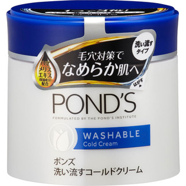

返回列表
产品名称：ポンズ ウォッシャブルコールドクリーム

ユニリーバ・ジャパン ポンズ ウォッシャブルコールドクリーム ２７０ｇ
メーカー ユニリーバ・ジャパン
JANコード 4902111727370
商品の特徴
洗い流すコールドクリーム
- 成分・分量
- ミネラルオイル、
水、
PPG-15ステアリル、
ステアレス-2、
PG、
ステアレス-20、
パラフィン、
セタノール、
ジメチコン、
BG、
変性アルコール、
ステアリルアルコール、
ステアリン酸、
ハマメリス葉エキス、
ヒドロキシプロピルシクロデキストリン、
パルミチン酸、
カルボマー、
水酸化K、
ブチルカルバミン酸ヨウ化プロピニル、
メチルイソチアゾリノン、
メチルパラベン
- 用法及び用量
- 乾いた手に適量（マスカット１粒大）をとり、やさしくマッサージするようにメイクとなじませ、よくすすぐ。